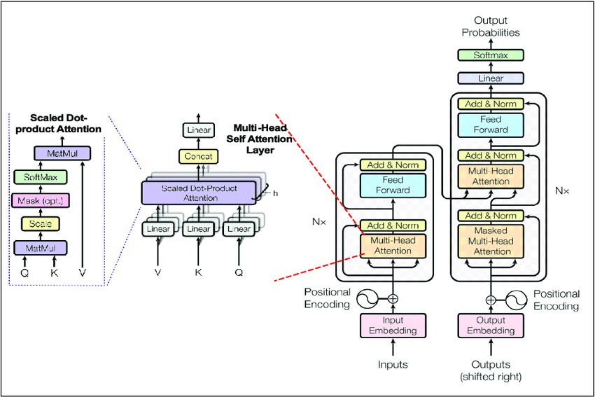
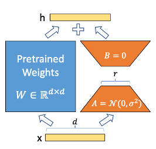
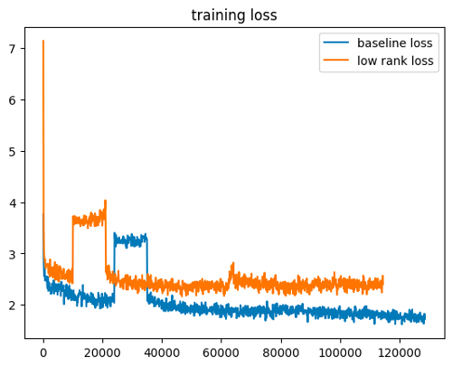
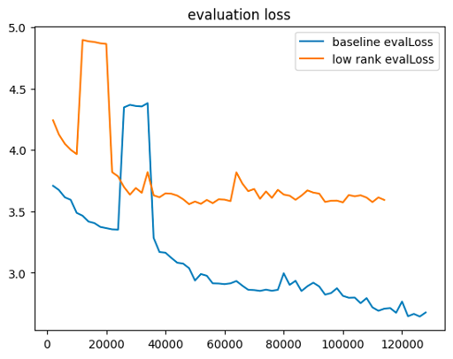

Over-parameterized language models are low rank intrinsically. In this project, I trained 2 causal language models with 28M parameters each, such that one is the baseline and another uses low-rank weights but has higher hidden dimensions, and compare their training speed and accuracy. Although they are trained with more than 12 billion tokens, both models fail to finish training. According to the loss curve on hand, the baseline model trounces the low-rank model in speed and performance.
GITHUB: https://github.com/XiaonanFu-ucsd/COGS185-final-project
Large language models show their power in few-shot learning ability, and the potential to solve most downstream tasks. Just like their name, they are large and expensive to train due to the amount of parameters, and hard to infer on a local machine. If there is some method to make small enough models have decent text generate ability, then a personal device can do local inference in a private and efficient manner. Given that the causal language model with high hidden dimension usually performs better, I explored to use low rank matrices product to simulate a larger model with the same amount of parameters. To compare the overall performance of the normal model and low rank model in terms of training efficiency and accuracy, I trained two models with 28M parameters each, with multiple datasets over 7GB of text. In the training process, I faced several challenges and tried to adjust multiple hyper-parameters to speed up training, such as sequence length, batch size, loss function, and learning rate. Although the low rank model does not work in the limited training time, the exploration of training a language model is still a valuable experience.
Each Attention layer in transformers uses three matrices to map every token embedding to be query, key, and value vectors. The dot product of the query and key vectors, decides the weight of the corresponding value vectors after the SoftMax operation. After this process, one token embedding obtains other embedding’s value with different weights, so the model has the ability to learn the sequential relationship across different tokens.
The positional encoding is also critical for the attention mechanism, since the token embedding itself does not contain the structural information, it should be added in every attention layer. There are many ways to add positional encoding, and in the paper Attention Is All You Need, it presents sinusoidal positional encoding and learned positional encoding, and they find that they have similar performance, but the sinusoidal version may be better at extrapolation.
Causal language models use masked attention to restrict every token can only reference the previous token, so they are more relevant and fit the text generation task. In the implementation, they add a mask with some negative infinity to the dot product result, then the number will be zero after SoftMax. Although they are decoder-only structure, the decoder just contains one attention layer and one multilayer feed-forward network.
From a holistic perspective to describe the text generation process, a tokenizer encode the prompt to a sequence of token, which can be understood as an integer index in a dictionary. The model uses a lookup table to find the embedding for each token, and send embeddings to decoder layers. In the end, embeddings multiply with a large matric to produce the logit, then use SoftMax to find which logit has the largest probability. It is a multiclass classification task.
Low-rank adaptation is a common fine-turn method to make a base model have a better performance in a downstream task. Inspired by the finding that a large model may not fully utilize their express ability, and those weights have low rank intrinsically, Edward Hu, et al. hypothesize that the amount of weight change also has this low rank property. Based on LORA, fine-turning only need a small amount of parameter to adjust a large model; a larger matrix is the product of two smaller matrices with a much lower rank.

Ronen Eldan, et al. build a small enough dataset that covers diverse vocabulary, facts, and reasoning. They used GPT4 prompted with randomly combined none and verb, to produce millions of stories. Using this dataset, their model with 28 million parameters performance better than the GPT2-large with 774 million parameters in terms of story continuation.
The datasets are mainly composed of the TinyStories and TinyStories Instruction datasets. I also use Alpaca Chinese, Dolly 15K, Lightnovels_EN, Chinese Metaphors datasets as supplementary, and allow the model learn bilingual text generation. About 2/3 of the data comes from TinyStories datasets.
Since the datasets are large, I designed a multi-processing dataloader, which can randomly pick which dataset to sample from with the given proportion, and does not need to load all the datasets into the memory. The dataloader needs to tokenize the text while training. If one independent sample text is too long, it will randomly select part of it to fit the specified token sequence length. If the text is too short, it will pad the text with a padding token at the front. The sequence length used in this project is 1024, such that the model needs to predict the last token. By default, the tokenizer will put BOS at the beginning and EOS at the end. To prevent most rows end in EOS, the dataloader will randomly crop the row; it will also increase the robustness of the model. The batch size is 120.
I used the tokenizer from the Chinese-LLaMA-Alpaca project, which extends the LLaMA vocabulary with Chinese words. The vocabulary size of this tokenizer is 49954.
The baseline model references the implementation of nanoGPT and Meta’s LLAMA. It has 4 layers with a hidden size of 768 and 12 heads, in a total of 28M parameters, except for the final linear layer which converts embedding to logit. Every attention layer needs positional information. Rather than the methods presented in Attention Is All You Need, this model used rotary positional encoding, which does not add to the token embedding, but element-wisely multiplies to the matrix x_q and x_k. This encoding has decreasing sinusoidal frequency for larger dimensions (Su, et al.). Flash attention is used to speed up attention computation. After an attention layer, there is a two-layer FFN, for each is 768*3072; between them is a SiLU activation function.
The low rank model has the same structure, but uses low rank weights matrices to achieve a higher hidden dimension, which is 1152, and has 18 heads.
| wq | wk | wv | wo | Linear | |
|---|---|---|---|---|---|
| Baseline | 768*768 | 768*768 | 768*768 | 768*768 | 768*3072 * 2 |
| Low-rank | 1152*256 * 2 | 1152*256 * 2 | 1152*256 * 2 | 1152*256 * 2 | (1152*512 + 512*2880) * 2 |
Table 1: comparing the dimension of models
For both models, they have layer normalization rather than batch normalization. Batch normalization finds the means among different samples, and layer normalization emphasizes the means within the sample. It is suitable for sequential tasks because the sample have a high inner relationship, but very weak batch-wise relationship. I used RMSnorm since it is slightly faster and make the loss lower (Zhang, et al.).
The training process uses cross-entropy loss, and Adam optimizer with a learning rate of 1e-4. The learning rate will decrease under the control of cosine annealing, which will have a cosine curve that the half period is 20000 iterations. With limited computation power, it is slow to train a model with 28 million parameters, and hard to tweak the hyper-parameters and build an intuition. Other than the slow loss decreasing, in the first round, the low rank model had nan loss after 9100 steps. To solve this problem, I revise the model and restart the training for low rank model.
It is highly possible that the nan loss caused by some results of SoftMax become 0. The loss function is cross-entropy loss, and in its calculation, there is ln(p), so if p = 0, then ln(p) = -inf. By backpropagation, the invalid value contaminates the whole model. Exploding gradients may cause this problem. Also, I trained the model using BFloat16, which has the same range as float32 but less precision, hence it may severer the problem. First I lowered the learning rate to 1e-5, then use a gradient clip to constrain its value, and set a loss clamp to prevent any infinite loss. Moreover, the low rank model has more linear layers inside, so I add one more layer-normalization in every MLP after the attention layer.
Although this fixes the nan problem, the loss function does not show a sign of decreasing. At first, I believe the learning rate is still too large so the gradients go overhead, and the batch size should be larger to smooth the loss, but hours later the model still has a similar loss, I realize that other people successfully train larger models with the learning rate of 1e-4, which means I should use some value higher than that. In the rest of the experiment, I use 2e-4 for the baseline model, and 1.5e-4 for the low rank model. Also, the cosine annealing decay period is set to 120000 iterations, so the learning rate can stay high for a long enough time.


The baseline model is trained with 128600 batches, and the low rank model is trained with 114500 batches, which is more than 12 billion tokens. However, both models fail to generate any meaningful sentence.
The first peak for those two loss curves is due to that I used label smooth for the loss function. It lowers the probability of the ground truth label; without this option, the ground truth will be a one-hot encoding. It is good for generalization, but if I have enough data and many class labels, the model is hard to overfit. That is why I turn it off after about 10000 iterations. After this peak, because I rise the learning rate so there is another peak.
The baseline loss curve shows a promising decreasing trend, especially for the evaluation curve; but the low rank’s loss curve does not really drop. Since this experiment does not reach its end, I cannot assert that the low-rank method does not work for the training of a relatively small language model. Based on the loss curves, it is clear that the baseline model is much more efficient in training than the low rank model, and has more possibility to have a good performance. One potential justification is that the low rank model is deeper and wider, even if its decoder layers have slightly fewer parameters than the baseline model’s. Another justification is that text generation is already complex enough for this size of model, so the low rank property only applies to the over-parameterized model.
The tradeoff of rank and dimension does not work with a relatively small language model. After about 3 epochs of data, both the baseline and low rank model have not finished training, but the trend shows that the baseline model still can lower its loss in further training, but seems like the low rank model reaches its limitation. Although the experiment is unsuccessful and the hypothesis is falsified, this project establishes my confidence in training large models, and let me realize that model architectures, datasets, training methods, and computing power are the keys to success in machine learning.